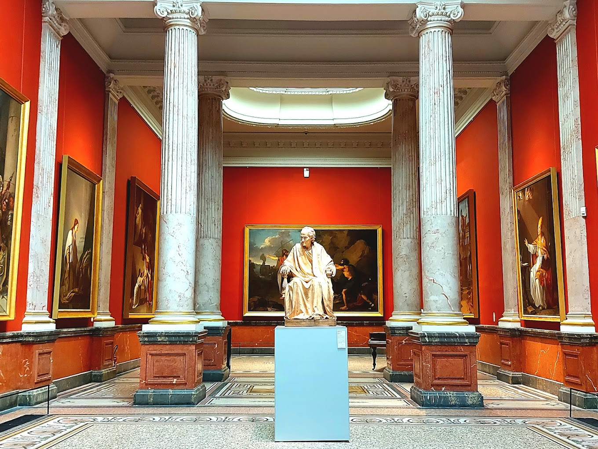

Vue de Village (View of Village)
1868
Located: Musée Fabre in Montpellier, Paris, France

Réunion de Famile (Family Reunion)
1867
Located: Musée d'Orsay, Paris, France
L'atelier de Bazille (Bazille Studio)
1870
Located: Musée d'Orsay, Paris, France
Les lauriers roses (The Oleanders)
1867
Located: Cincinnati Art Museum Cincinnati, Ohio